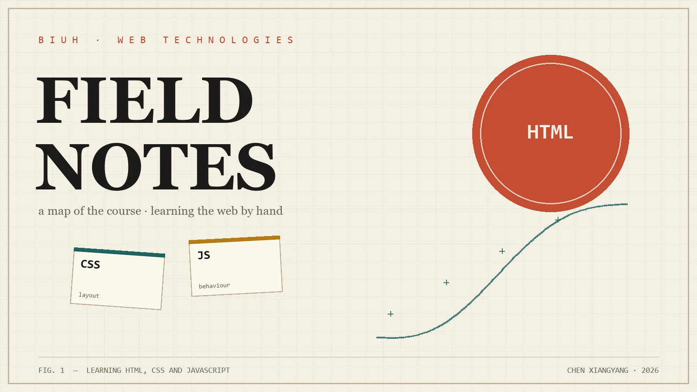

Learning HTML · a site built by hand
A field notebook for the web
This is where I keep what I learn while building for the web: the rules of HTML, the patience of CSS, and the small pieces of JavaScript that make a page answer back. Everything here was written in plain HTML, CSS and JavaScript — no framework, no build step.
The contents
What is on this site
Four small pages, each one practising a different part of the same toolkit.
Quotes
Eighteen lines about learning, code and craft — plus a hero that picks one at random.
Project ideas
Six things I would like to build next, with the skill each one would teach me.
The useless machine
A switch, an arm, and the most pointless machine ever built — followed by a small game.
About
Who writes this, how the site is made, and what I would do differently.
The work behind it
What I practised
-
01
Semantic HTML
Starting from landmarks —
header,nav,main,footer— before writing any CSS. Each page has a heading order that reads like an outline, and every image has real alternative text. -
02
Layout without a framework
CSS custom properties for the palette, grid and flexbox for the layout, and
clamp()for type that grows with the screen. The same file handles a 320 px phone and a wide desktop. -
03
JavaScript that does one job
Three small scripts: one fetches the shared navigation, one picks a random quote, and one runs the machine and its game. No library, no bundler.
-
04
DRY navigation
The menu is written once in
nav.htmland copied into every page at runtime bynav.js. Adding a page means editing one file, not five. -
05
Accessibility
Keyboard reachable controls, visible focus, a skip link, labels and
aria-livestatus messages, and a reduced-motion version of every animation. The game can be played with the keyboard alone. -
06
Git and publishing
One repository, meaningful commits, and a live site published from the
mainbranch. Every push updates the address people can open.
- Built with
- Plain HTML, CSS and JavaScript
- Tools
- VS Code and Live Server
- Files
- 5 pages · 1 stylesheet · 3 scripts
- Hosted on
- GitHub Pages